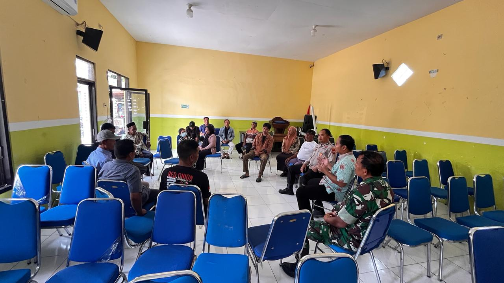
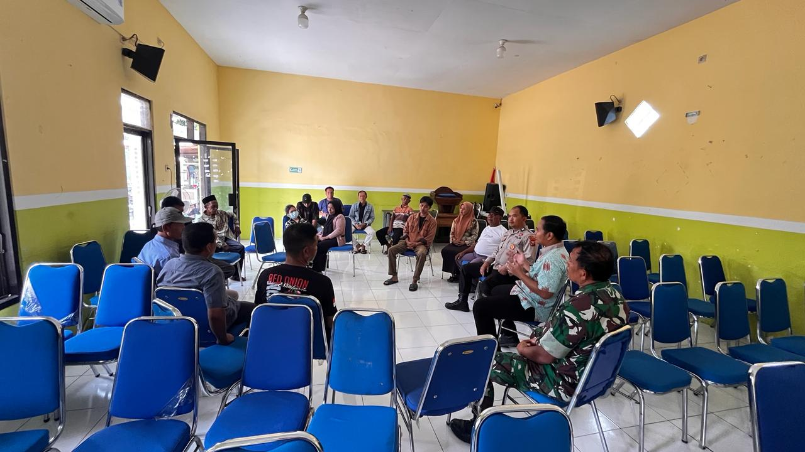

Masyarakat
02 Januari 2026
Pembacaan Shalawat Nariyah & Doa Awal Tahun
Kegiatan pembacaan Shalawat Nariyah dan Doa Awal Tahun
 



Portal informasi resmi Pemerintah Kelurahan Mimbaan. Transparansi informasi publik dan pelayanan prima untuk masyarakat.
Update Data Semester I Tahun 2025

REFAN RIZKY MULYADI, S.STP, M.M
Lurah Mimbaan
Kelurahan Mimbaan berkomitmen untuk memberikan pelayanan terbaik bagi masyarakat. Melalui website ini, kami berharap dapat menjembatani informasi antara pemerintah kelurahan dan warga, serta mempromosikan potensi lokal yang kami miliki.
Sebagai salah satu kelurahan yang dinamis di Kecamatan Panji, kami terus berinovasi dalam tata kelola pemerintahan yang transparan, akuntabel, dan partisipatif. Sinergi antara aparatur pemerintah dan seluruh elemen masyarakat menjadi kunci utama dalam membangun lingkungan yang aman, nyaman, dan produktif demi kesejahteraan bersama. Kami percaya bahwa dengan semangat gotong royong, Mimbaan akan terus tumbuh menjadi wilayah yang mandiri dan berdaya saing.
Berita terbaru dan informasi penting seputar kelurahan.
Kegiatan pembacaan Shalawat Nariyah dan Doa Awal Tahun
Mengikuti Rapat Koordinasi di Pendopo Kecamatan Panji terkait keluhan warga tentang Balap Liar
Kunjungan Lurah Mimbaan ke Posyandu di RW 001 dan RW 016
Dalam rangka menyambut awal tahun, kami mengadakan kegiatan pembacaan Shalawat Nariyah sebanyak 4444x dan Doa Awal Tahun
Aula Kelurahan Mimbaan
Kegiatan Ngopi Bareng sekaligus Diskusi bersama Bupati dan Wakil Bupati Situbondo yang akan dihadiri oleh perwakilan PPPK Paruh Waktu.
Pendopo Rakyat Situbondo
Rapat Koordinasi terkait keluhan warga mengenai balap liar di Jl. Basuki Rahmat dan Argopuro
Pendopo Kecamatan Panji
Senam Sehat Bersama yang dihadiri oleh beberapa Perangkat Desa, Tokoh Masyarakat, dan Tenaga Kesehatan
Halaman Kecamatan Panji
Temukan lokasi UMKM terdekat di sekitar Anda melalui peta interaktif berikut.
Produk unggulan kuliner & hasil karya warga Kelurahan Mimbaan. Dukung ekonomi lokal dengan membeli produk asli daerah kita.
Pengkepeng - RT 002 / RW 018
Tempe Mentah, Keripik Tempe, dan Sambal Goreng Tempe.
Jl. Basuki Rahmat - RT 003 / RW 012
Aneka Kuliner Ayam Pedas
Jl. Basuki Rahmat - RT 004 / RW 010
Anek kuliner mie pedas dan gurih.
Jl. Argopuro O IV/6 - RT 002 / RW 004
Kerajinan Aksesoris dan Tas modern.
Destinasi Wisata untuk Bermain dan Belajar.
Sebuah bukit yang dipuncaknya terdapat sebuah batu dengan diameter sekitar satu meter.
Lihat DetailArea santai keluarga dengan fasilitas olahraga dan taman bermain anak yang asri dan bersih.
Lihat Detail